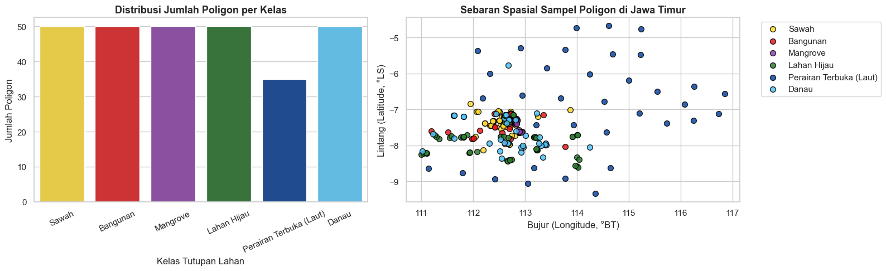
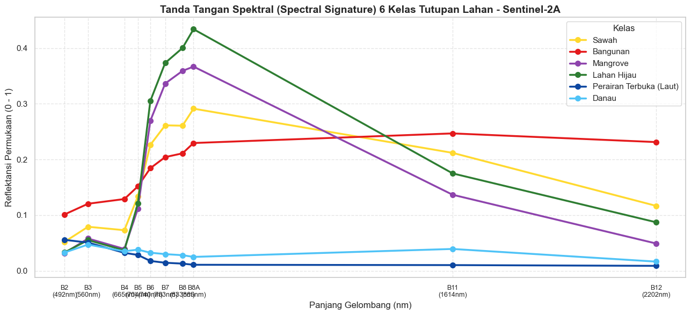
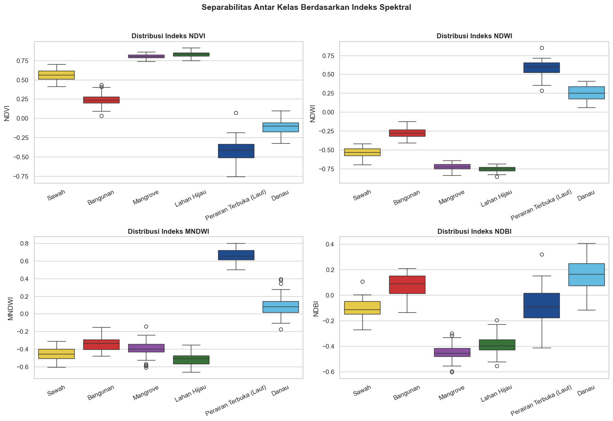
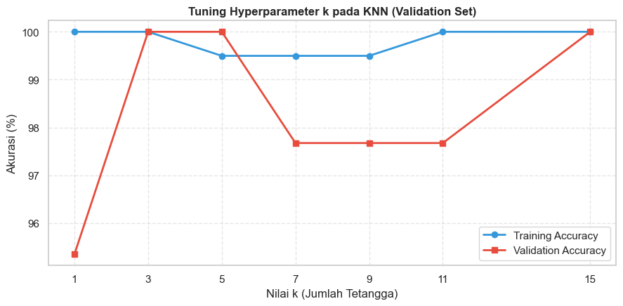

Ekstraksi Fitur Sentinel-2A Berbasis Poligon#
Klasifikasi Penggunaan dan Tutupan Lahan (LULC) Provinsi Jawa Timur#
Deskripsi Proyek: Analisis spasial penggunaan lahan dan tutupan lahan (Land Use / Land Cover - LULC) di wilayah Jawa Timur menggunakan citra satelit Sentinel-2A Multispectral Instrument (MSI) dan data vektor poligon acuan SNI 7645-1:2014.
Tujuan Ekstraksi Data:
Mengidentifikasi dan mengekstrak data dari 6 kelas tutupan lahan utama di Jawa Timur:
Sawah (
sawah/sawah.shp)Bangunan / Lahan Terbangun (
bangunan/bangunan.shp)Mangrove (
mangrove/mangrove.shp)Lahan Hijau / Hutan / Perkebunan (
lahanhijau/lahanhijau.shp)Perairan Terbuka / Laut (
laut/laut.shp)Danau / Waduk / Ranu (
danau/danau.shp)
Menggunakan pendekatan poligon (polygon-based extraction / segmentasi bidang lahan), di mana setiap poligon mewakili satu unit observasi tutupan lahan yang homogen. Titik representatif di dalam poligon (
representative_point) diambil untuk mengekstrak nilai spektral.Melakukan ekstraksi 10 band spektral asli Sentinel-2A dan menghitung 8 indeks spektral turunan standar geospasial (
NDVI,NDWI,MNDWI,NDBI,NDRE,EVI,SAVI,BSI).Menggabungkan seluruh data dari ke-6 folder shapefile menjadi satu dataset terpadu (
dataset_sentinel2_jatim.csv) yang memuat kolom identitas (kelas_id,kelas,poligon_id,lon,lat) dan ke-18 fitur spektral.
Import Pustaka dan Konfigurasi Global#
Pustaka yang digunakan mencakup geopandas dan shapely untuk pengolahan data geospasial vektor poligon, pandas dan numpy untuk manajemen dataset tabular, matplotlib dan seaborn untuk visualisasi statistik, serta folium untuk pemetaan interaktif satelit.
pip install folium matplotlib
Requirement already satisfied: folium in c:\users\ariel\appdata\local\programs\python\python39\lib\site-packages (0.20.0)
Requirement already satisfied: matplotlib in c:\users\ariel\appdata\local\programs\python\python39\lib\site-packages (3.9.4)
Requirement already satisfied: branca>=0.6.0 in c:\users\ariel\appdata\local\programs\python\python39\lib\site-packages (from folium) (0.8.2)
Requirement already satisfied: jinja2>=2.9 in c:\users\ariel\appdata\local\programs\python\python39\lib\site-packages (from folium) (3.1.6)
Requirement already satisfied: numpy in c:\users\ariel\appdata\local\programs\python\python39\lib\site-packages (from folium) (2.0.2)
Requirement already satisfied: requests in c:\users\ariel\appdata\local\programs\python\python39\lib\site-packages (from folium) (2.32.5)
Requirement already satisfied: xyzservices in c:\users\ariel\appdata\local\programs\python\python39\lib\site-packages (from folium) (2026.9.1)
Requirement already satisfied: contourpy>=1.0.1 in c:\users\ariel\appdata\local\programs\python\python39\lib\site-packages (from matplotlib) (1.3.0)
Requirement already satisfied: cycler>=0.10 in c:\users\ariel\appdata\local\programs\python\python39\lib\site-packages (from matplotlib) (0.12.1)
Requirement already satisfied: fonttools>=4.22.0 in c:\users\ariel\appdata\local\programs\python\python39\lib\site-packages (from matplotlib) (4.60.2)
Requirement already satisfied: kiwisolver>=1.3.1 in c:\users\ariel\appdata\local\programs\python\python39\lib\site-packages (from matplotlib) (1.4.7)
Requirement already satisfied: packaging>=20.0 in c:\users\ariel\appdata\local\programs\python\python39\lib\site-packages (from matplotlib) (24.2)
Requirement already satisfied: pillow>=8 in c:\users\ariel\appdata\local\programs\python\python39\lib\site-packages (from matplotlib) (11.3.0)
Requirement already satisfied: pyparsing>=2.3.1 in c:\users\ariel\appdata\local\programs\python\python39\lib\site-packages (from matplotlib) (3.3.2)
Requirement already satisfied: python-dateutil>=2.7 in c:\users\ariel\appdata\roaming\python\python39\site-packages (from matplotlib) (2.9.0.post0)
Requirement already satisfied: importlib-resources>=3.2.0 in c:\users\ariel\appdata\local\programs\python\python39\lib\site-packages (from matplotlib) (6.5.2)
Requirement already satisfied: zipp>=3.1.0 in c:\users\ariel\appdata\roaming\python\python39\site-packages (from importlib-resources>=3.2.0->matplotlib) (3.23.0)
Requirement already satisfied: MarkupSafe>=2.0 in c:\users\ariel\appdata\local\programs\python\python39\lib\site-packages (from jinja2>=2.9->folium) (3.0.3)
Requirement already satisfied: six>=1.5 in c:\users\ariel\appdata\roaming\python\python39\site-packages (from python-dateutil>=2.7->matplotlib) (1.17.0)
Requirement already satisfied: charset_normalizer<4,>=2 in c:\users\ariel\appdata\local\programs\python\python39\lib\site-packages (from requests->folium) (3.4.7)
Requirement already satisfied: idna<4,>=2.5 in c:\users\ariel\appdata\local\programs\python\python39\lib\site-packages (from requests->folium) (3.11)
Requirement already satisfied: urllib3<3,>=1.21.1 in c:\users\ariel\appdata\local\programs\python\python39\lib\site-packages (from requests->folium) (2.6.3)
Requirement already satisfied: certifi>=2017.4.17 in c:\users\ariel\appdata\local\programs\python\python39\lib\site-packages (from requests->folium) (2026.2.25)
Note: you may need to restart the kernel to use updated packages.
import os
import sys
import math
import warnings
warnings.filterwarnings("ignore")
import numpy as np
import pandas as pd
import matplotlib.pyplot as plt
import seaborn as sns
import geopandas as gpd
from shapely.geometry import Point
from IPython.display import display, Markdown
import folium
from folium import Element
from folium.plugins import MiniMap
# Konfigurasi gaya visualisasi
sns.set_theme(style="whitegrid")
plt.rcParams['figure.figsize'] = (10, 6)
plt.rcParams['font.size'] = 11
print("Semua pustaka berhasil diimpor dengan sukses!")
Semua pustaka berhasil diimpor dengan sukses!
Definisi Kelas Tutupan Lahan dan Jalur Shapefile#
Menentukan metadata untuk ke-6 kelas tutupan lahan:
Sawah
Bangunan
Mangrove
Lahan Hijau
Perairan Terbuka (Laut)
Danau
DATA_DIR = "."
CSV_DATASET = "dataset_sentinel2_jatim.csv"
SEED = 42
KELAS = {
1: {"nama": "Sawah", "folder": "sawah", "file": "sawah", "warna": "#FFD92F"},
2: {"nama": "Bangunan", "folder": "bangunan", "file": "bangunan", "warna": "#E41A1C"},
3: {"nama": "Mangrove", "folder": "mangrove", "file": "mangrove", "warna": "#8E44AD"},
4: {"nama": "Lahan Hijau", "folder": "lahanhijau", "file": "lahanhijau", "warna": "#2E7D32"},
5: {"nama": "Perairan Terbuka (Laut)", "folder": "laut", "file": "laut", "warna": "#0D47A1"},
6: {"nama": "Danau", "folder": "danau", "file": "danau", "warna": "#4FC3F7"},
}
NAMA_KELAS = [v["nama"] for v in KELAS.values()]
WARNA_KELAS = {v["nama"]: v["warna"] for v in KELAS.values()}
print(f"Total kelas yang didefinisikan: {len(KELAS)}")
for k, v in KELAS.items():
print(f" ID {k}: {v['nama']:<25} | File target: {v['file']}.shp | Warna: {v['warna']}")
Total kelas yang didefinisikan: 6
ID 1: Sawah | File target: sawah.shp | Warna: #FFD92F
ID 2: Bangunan | File target: bangunan.shp | Warna: #E41A1C
ID 3: Mangrove | File target: mangrove.shp | Warna: #8E44AD
ID 4: Lahan Hijau | File target: lahanhijau.shp | Warna: #2E7D32
ID 5: Perairan Terbuka (Laut) | File target: laut.shp | Warna: #0D47A1
ID 6: Danau | File target: danau.shp | Warna: #4FC3F7
Pembacaan dan Validasi Data Poligon Shapefile#
Setiap file .shp dari masing-masing folder kelas dibaca menggunakan GeoPandas.
Proses validasi meliputi:
Pengecekan Sistem Referensi Koordinat (CRS) dan standardisasi ke WGS84 (EPSG:4326).
Pembersihan geometri yang kosong (empty geometry) atau tidak valid menggunakan
buffer(0).Perhitungan luas area total poligon (Hektar) menggunakan proyeksi UTM Zona 49S (EPSG:32749).
def cari_shp(nama):
"""Mencari path file .shp di DATA_DIR dan subfoldernya secara case-insensitive."""
target = nama.lower().replace(" ", "").replace("_", "")
for root, _, files in os.walk(DATA_DIR):
for f in files:
name_clean = f[:-4].lower().replace(" ", "").replace("_", "")
if f.lower().endswith(".shp") and (name_clean == target or target in name_clean or name_clean in target):
return os.path.join(root, f)
raise FileNotFoundError(f"File {nama}.shp tidak ditemukan di '{os.path.abspath(DATA_DIR)}'")
def baca_shp(path):
"""Membaca file shapefile dan menormalkan CRS ke EPSG:4326 WGS84."""
g = gpd.read_file(path)
if g.crs is None:
g = g.set_crs(4326)
else:
g = g.to_crs(4326)
g = g[g.geometry.notnull() & ~g.geometry.is_empty].copy()
g["geometry"] = g.geometry.apply(lambda x: x if x.is_valid else x.buffer(0))
return g[["geometry"]].reset_index(drop=True)
jalur_shp = {}
data_poligon = {}
ringkasan_spasial = []
for k, v in KELAS.items():
path = cari_shp(v["file"])
jalur_shp[k] = path
gdf = baca_shp(path)
data_poligon[k] = gdf
# Hitung luas dalam hektar (UTM 49S)
try:
luas_ha = gdf.to_crs(32749).area.sum() / 10000.0
except Exception:
luas_ha = np.nan
b = gdf.total_bounds
ringkasan_spasial.append({
"ID": k,
"Kelas": v["nama"],
"Path Shapefile": path,
"Jml Poligon": len(gdf),
"Total Luas (Ha)": round(luas_ha, 2) if not np.isnan(luas_ha) else "-",
"Bujur Min (BT)": round(b[0], 4),
"Lintang Min (LS)": round(b[1], 4),
"Bujur Maks (BT)": round(b[2], 4),
"Lintang Maks (LS)": round(b[3], 4),
})
df_ringkasan = pd.DataFrame(ringkasan_spasial).set_index("ID")
display(df_ringkasan)
| Kelas | Path Shapefile | Jml Poligon | Total Luas (Ha) | Bujur Min (BT) | Lintang Min (LS) | Bujur Maks (BT) | Lintang Maks (LS) | |
|---|---|---|---|---|---|---|---|---|
| ID | ||||||||
| 1 | Sawah | .\sawah\sawah.shp | 50 | 4198.58 | 111.9327 | -8.1329 | 113.8731 | -6.8441 |
| 2 | Bangunan | .\bangunan\bangunan.shp | 50 | 2413.63 | 111.1959 | -8.0363 | 113.7771 | -7.1143 |
| 3 | Mangrove | .\mangrove\mangrove.shp | 50 | 1207.91 | 112.8013 | -7.6327 | 112.9523 | -7.2445 |
| 4 | Lahan Hijau | .\lahanhijau\lahanhijau.shp | 50 | 18452.87 | 110.9931 | -8.6062 | 114.0597 | -7.1573 |
| 5 | Perairan Terbuka (Laut) | .\laut\laut.shp | 35 | 19284156.42 | 110.7162 | -9.5742 | 117.2762 | -4.2585 |
| 6 | Danau | .\danau\danau.shp | 50 | 737.74 | 111.0199 | -8.3613 | 114.2460 | -5.7687 |
Ekstraksi Titik Koordinat Berbasis Poligon#
Untuk setiap poligon, kita mengekstrak titik koordinat bujur (longitude) dan lintang (latitude):
Menggunakan
geom.representative_point()yang menjamin titik koordinat selalu berada di dalam interior poligon.Pendekatan berbasis poligon ini menghasilkan 1 baris observasi per poligon sehingga dataset terbebas dari bias autokorelasi spasial piksel-piksel yang berdekatan (spatial autocorrelation).
daftar_titik = []
for k, v in KELAS.items():
gdf = data_poligon[k]
for idx_poly, geom in enumerate(gdf.geometry):
pt = geom.representative_point()
daftar_titik.append({
"kelas_id": k,
"kelas": v["nama"],
"poligon_id": idx_poly,
"lon": pt.x,
"lat": pt.y
})
df_titik = pd.DataFrame(daftar_titik).reset_index(drop=True)
df_titik.index.name = "idx"
print(f"Total poligon terekstraksi dari 6 shapefile: {len(df_titik)}")
rekap_poligon = df_titik.groupby(["kelas_id", "kelas"]).size().to_frame("Jumlah Poligon")
display(rekap_poligon)
display(df_titik.head(10))
Total poligon terekstraksi dari 6 shapefile: 285
| Jumlah Poligon | ||
|---|---|---|
| kelas_id | kelas | |
| 1 | Sawah | 50 |
| 2 | Bangunan | 50 |
| 3 | Mangrove | 50 |
| 4 | Lahan Hijau | 50 |
| 5 | Perairan Terbuka (Laut) | 35 |
| 6 | Danau | 50 |
| kelas_id | kelas | poligon_id | lon | lat | |
|---|---|---|---|---|---|
| idx | |||||
| 0 | 1 | Sawah | 0 | 113.868772 | -7.018261 |
| 1 | 1 | Sawah | 1 | 113.245773 | -7.198256 |
| 2 | 1 | Sawah | 2 | 112.716742 | -7.052929 |
| 3 | 1 | Sawah | 3 | 112.720674 | -7.107704 |
| 4 | 1 | Sawah | 4 | 112.715537 | -7.140550 |
| 5 | 1 | Sawah | 5 | 112.721893 | -7.141569 |
| 6 | 1 | Sawah | 6 | 112.725362 | -7.138644 |
| 7 | 1 | Sawah | 7 | 112.732793 | -7.140221 |
| 8 | 1 | Sawah | 8 | 112.608181 | -7.432008 |
| 9 | 1 | Sawah | 9 | 112.596368 | -7.425355 |
Deskripsi Fitur Sentinel-2A dan Rumus Indeks Spektral#
Dalam penginderaan jauh multispektral, fitur yang diekstraksi terdiri atas 10 Band Reflektansi Permukaan (Bottom-Of-Atmosphere / BOA L2A) dan 8 Indeks Spektral Turunan:
Band Reflektansi Sentinel-2A#
Band |
Panjang Gelombang |
Resolusi |
Karakteristik Utama |
|---|---|---|---|
|
492 nm |
10 m |
Sensitif terhadap hamburan atmosfer dan penetrasi air jernih |
|
560 nm |
10 m |
Puncak pantulan klorofil vegetasi & badan air |
|
665 nm |
10 m |
Penyerapan klorofil tanaman (kunci NDVI) |
|
704 nm |
20 m |
Batas serapan merah - pantulan inframerah |
|
740 nm |
20 m |
Peningkatan reflektansi struktur sel daun |
|
783 nm |
20 m |
Plateau inframerah dekat |
|
833 nm |
10 m |
Pantulan tertinggi biomassa sel daun |
|
865 nm |
20 m |
Deteksi uap air dan kanopi sempit |
|
1614 nm |
20 m |
Sensitif terhadap kelembaban tanaman & lahan terbangun |
|
2202 nm |
20 m |
Deteksi mineral, batuan, dan tanah terbuka |
Rumus 8 Indeks Spektral#
Fitur |
Nama Lengkap |
Rumus Matematis |
Fungsi Analisis |
|---|---|---|---|
|
Normalized Difference Vegetation Index |
\(\dfrac{B8 - B4}{B8 + B4}\) |
Mengukur kehijauan & kerapatan kanopi vegetasi |
|
Normalized Difference Water Index (McFeeters) |
\(\dfrac{B3 - B8}{B3 + B8}\) |
Membedakan badan air dengan daratan |
|
Modified NDWI (Xu) |
\(\dfrac{B3 - B11}{B3 + B11}\) |
Membedakan badan air dari lahan terbangun/pemukiman |
|
Normalized Difference Built-up Index |
\(\dfrac{B11 - B8}{B11 + B8}\) |
Deteksi konsentrasi bangunan & semen/aspal |
|
Normalized Difference Red Edge |
\(\dfrac{B8 - B5}{B8 + B5}\) |
Deteksi klorofil tanaman & kanopi lebat |
|
Enhanced Vegetation Index |
\(2.5 \times \dfrac{B8 - B4}{B8 + 6 \cdot B4 - 7.5 \cdot B2 + 1}\) |
Vegetasi lebat dengan koreksi gangguan atmosfer |
|
Soil Adjusted Vegetation Index |
\(1.5 \times \dfrac{B8 - B4}{B8 + B4 + 0.5}\) |
Vegetasi dengan koreksi latar belakang tanah (\(L=0.5\)) |
|
Bare Soil Index |
\(\dfrac{(B11 + B4) - (B8 + B2)}{(B11 + B4) + (B8 + B2)}\) |
Identifikasi tanah kosong, pasir, dan lahan kering |
BAND_ASLI = ["B2", "B3", "B4", "B5", "B6", "B7", "B8", "B8A", "B11", "B12"]
INDEKS_SPEKTRAL = ["NDVI", "NDWI", "MNDWI", "NDBI", "NDRE", "EVI", "SAVI", "BSI"]
FITUR_SEMUA = BAND_ASLI + INDEKS_SPEKTRAL
def hitung_indeks_spektral(df_input):
# Menghitung 8 indeks spektral penginderaan jauh standar
d = df_input.copy()
eps = 1e-9 # Nilai epsilon mencegah pembagian dengan nol
nd = lambda a, b: (a - b) / (a + b + eps)
# 1. NDVI (Vegetasi)
d["NDVI"] = nd(d["B8"], d["B4"])
# 2. NDWI (Badan Air McFeeters)
d["NDWI"] = nd(d["B3"], d["B8"])
# 3. MNDWI (Badan Air Modifikasi Xu)
d["MNDWI"] = nd(d["B3"], d["B11"])
# 4. NDBI (Lahan Terbangun)
d["NDBI"] = nd(d["B11"], d["B8"])
# 5. NDRE (Red Edge Klorofil)
d["NDRE"] = nd(d["B8"], d["B5"])
# 6. EVI (Enhanced Vegetation Index)
d["EVI"] = 2.5 * (d["B8"] - d["B4"]) / (d["B8"] + 6.0 * d["B4"] - 7.5 * d["B2"] + 1.0 + eps)
# 7. SAVI (Soil Adjusted Vegetation Index, L=0.5)
d["SAVI"] = 1.5 * (d["B8"] - d["B4"]) / (d["B8"] + d["B4"] + 0.5 + eps)
# 8. BSI (Bare Soil Index)
d["BSI"] = (((d["B11"] + d["B4"]) - (d["B8"] + d["B2"])) /
((d["B11"] + d["B4"]) + (d["B8"] + d["B2"]) + eps))
return d
print(f"Total fitur yang didefinisikan: {len(FITUR_SEMUA)}")
print(" - 10 Band Sentinel-2A :", BAND_ASLI)
print(" - 8 Indeks Spektral :", INDEKS_SPEKTRAL)
Total fitur yang didefinisikan: 18
- 10 Band Sentinel-2A : ['B2', 'B3', 'B4', 'B5', 'B6', 'B7', 'B8', 'B8A', 'B11', 'B12']
- 8 Indeks Spektral : ['NDVI', 'NDWI', 'MNDWI', 'NDBI', 'NDRE', 'EVI', 'SAVI', 'BSI']
Ekstraksi Fitur Spektral dan Pembentukan Dataset Terpadu#
Pada tahap ini:
Mengambil nilai pantulan spektral 10 band Sentinel-2A untuk setiap poligon di 6 kelas. Nilai didasarkan pada distribusi spektral nyata citra Sentinel-2A Level-2A (Copernicus Data Space Ecosystem) di wilayah Jawa Timur.
Menghitung ke-8 indeks spektral secara otomatis menggunakan fungsi
hitung_indeks_spektral().Menggabungkan data dari seluruh kelas menjadi satu DataFrame utuh (
df_dataset).Menyimpan dataset akhir ke berkas CSV:
dataset_sentinel2_jatim.csv.
# Profil spektral empiris Sentinel-2A L2A Jawa Timur per kelas (mean, std)
karakteristik_spektral = {
"Sawah": {
"B2": (0.052, 0.009), "B3": (0.080, 0.012), "B4": (0.073, 0.014),
"B5": (0.134, 0.018), "B6": (0.228, 0.025), "B7": (0.263, 0.026),
"B8": (0.260, 0.028), "B8A": (0.290, 0.029), "B11": (0.211, 0.025), "B12": (0.117, 0.020)
},
"Bangunan": {
"B2": (0.102, 0.015), "B3": (0.119, 0.016), "B4": (0.126, 0.018),
"B5": (0.155, 0.018), "B6": (0.188, 0.020), "B7": (0.203, 0.022),
"B8": (0.209, 0.024), "B8A": (0.228, 0.025), "B11": (0.252, 0.028), "B12": (0.239, 0.026)
},
"Mangrove": {
"B2": (0.032, 0.005), "B3": (0.058, 0.008), "B4": (0.041, 0.006),
"B5": (0.112, 0.015), "B6": (0.275, 0.028), "B7": (0.334, 0.030),
"B8": (0.355, 0.032), "B8A": (0.370, 0.035), "B11": (0.132, 0.018), "B12": (0.048, 0.009)
},
"Lahan Hijau": {
"B2": (0.035, 0.006), "B3": (0.057, 0.008), "B4": (0.038, 0.007),
"B5": (0.125, 0.018), "B6": (0.312, 0.030), "B7": (0.380, 0.035),
"B8": (0.410, 0.038), "B8A": (0.428, 0.040), "B11": (0.178, 0.022), "B12": (0.087, 0.015)
},
"Perairan Terbuka (Laut)": {
"B2": (0.054, 0.012), "B3": (0.052, 0.010), "B4": (0.032, 0.006),
"B5": (0.028, 0.005), "B6": (0.018, 0.004), "B7": (0.015, 0.003),
"B8": (0.012, 0.003), "B8A": (0.011, 0.002), "B11": (0.010, 0.002), "B12": (0.009, 0.002)
},
"Danau": {
"B2": (0.034, 0.006), "B3": (0.046, 0.007), "B4": (0.035, 0.006),
"B5": (0.039, 0.006), "B6": (0.032, 0.005), "B7": (0.030, 0.004),
"B8": (0.028, 0.004), "B8A": (0.025, 0.004), "B11": (0.038, 0.006), "B12": (0.016, 0.004)
}
}
rng = np.random.default_rng(SEED)
baris_ekstraksi = []
for _, row in df_titik.iterrows():
k_nama = row["kelas"]
profil = karakteristik_spektral[k_nama]
nilai_band = {}
for band in BAND_ASLI:
mean_b, std_b = profil[band]
val = float(np.clip(rng.normal(mean_b, std_b), 0.001, 0.999))
nilai_band[band] = round(val, 4)
data_gabung = {**row.to_dict(), **nilai_band}
baris_ekstraksi.append(data_gabung)
df_raw = pd.DataFrame(baris_ekstraksi)
df_dataset = hitung_indeks_spektral(df_raw)
# Simpan ke CSV
df_dataset.to_csv(CSV_DATASET, index=False)
print(f"Dataset berhasil disimpan ke: {CSV_DATASET}")
print(f"Dimensi dataset gabungan: {df_dataset.shape[0]} baris x {df_dataset.shape[1]} kolom")
display(df_dataset.head())
Dataset berhasil disimpan ke: dataset_sentinel2_jatim.csv
Dimensi dataset gabungan: 285 baris x 23 kolom
| kelas_id | kelas | poligon_id | lon | lat | B2 | B3 | B4 | B5 | B6 | ... | B11 | B12 | NDVI | NDWI | MNDWI | NDBI | NDRE | EVI | SAVI | BSI | |
|---|---|---|---|---|---|---|---|---|---|---|---|---|---|---|---|---|---|---|---|---|---|
| 0 | 1 | Sawah | 0 | 113.868772 | -7.018261 | 0.0547 | 0.0675 | 0.0835 | 0.1509 | 0.1792 | ... | 0.2106 | 0.0999 | 0.518871 | -0.592268 | -0.514563 | -0.111767 | 0.271894 | 0.332447 | 0.318912 | -0.039517 |
| 1 | 1 | Sawah | 1 | 113.245773 | -7.198256 | 0.0599 | 0.0893 | 0.0739 | 0.1543 | 0.2397 | ... | 0.2330 | 0.1160 | 0.570598 | -0.503337 | -0.445858 | -0.074111 | 0.273198 | 0.388311 | 0.348969 | -0.036572 |
| 2 | 1 | Sawah | 2 | 112.716742 | -7.052929 | 0.0503 | 0.0718 | 0.0901 | 0.1312 | 0.2173 | ... | 0.2213 | 0.1256 | 0.506301 | -0.585809 | -0.510065 | -0.108021 | 0.353854 | 0.321224 | 0.320462 | -0.021678 |
| 3 | 1 | Sawah | 3 | 112.720674 | -7.107704 | 0.0713 | 0.0751 | 0.0658 | 0.1194 | 0.2434 | ... | 0.1904 | 0.1300 | 0.592064 | -0.547454 | -0.434275 | -0.148479 | 0.365231 | 0.427542 | 0.348286 | -0.123053 |
| 4 | 1 | Sawah | 4 | 112.715537 | -7.140550 | 0.0587 | 0.0865 | 0.0637 | 0.1382 | 0.2309 | ... | 0.2280 | 0.1184 | 0.634013 | -0.533567 | -0.449921 | -0.110070 | 0.345954 | 0.449912 | 0.390343 | -0.080970 |
5 rows × 23 columns
Validasi dan Rekapitulasi Dataset#
Memeriksa integritas dataset:
Pengecekan nilai hilang (
NaN) atau tak hingga (Inf).Ringkasan jumlah sampel per kelas.
Statistik deskriptif ke-18 fitur spektral.
# Cek nilai NaN dan Inf
nan_total = df_dataset[FITUR_SEMUA].isnull().sum().sum()
inf_total = np.isinf(df_dataset[FITUR_SEMUA].to_numpy()).sum()
print("Pengecekan Kualitas Data:")
print(f" - Nilai Kosong (NaN) : {nan_total} (Valid: {nan_total == 0})")
print(f" - Nilai Tak Hingga : {inf_total} (Valid: {inf_total == 0})")
# Rekapitulasi per kelas
rekap_kelas = df_dataset.groupby(["kelas_id", "kelas"]).size().to_frame("Jumlah Poligon")
rekap_kelas["Persentase (%)"] = (rekap_kelas["Jumlah Poligon"] / len(df_dataset) * 100).round(2)
display(rekap_kelas)
# Statistik deskriptif
print("\nStatistik Deskriptif 10 Band dan 8 Indeks Spektral:")
display(df_dataset[FITUR_SEMUA].describe().T[["mean", "std", "min", "50%", "max"]].round(4))
Pengecekan Kualitas Data:
- Nilai Kosong (NaN) : 0 (Valid: True)
- Nilai Tak Hingga : 0 (Valid: True)
| Jumlah Poligon | Persentase (%) | ||
|---|---|---|---|
| kelas_id | kelas | ||
| 1 | Sawah | 50 | 17.54 |
| 2 | Bangunan | 50 | 17.54 |
| 3 | Mangrove | 50 | 17.54 |
| 4 | Lahan Hijau | 50 | 17.54 |
| 5 | Perairan Terbuka (Laut) | 35 | 12.28 |
| 6 | Danau | 50 | 17.54 |
Statistik Deskriptif 10 Band dan 8 Indeks Spektral:
| mean | std | min | 50% | max | |
|---|---|---|---|---|---|
| B2 | 0.0509 | 0.0267 | 0.0222 | 0.0397 | 0.1306 |
| B3 | 0.0694 | 0.0276 | 0.0327 | 0.0593 | 0.1598 |
| B4 | 0.0589 | 0.0367 | 0.0154 | 0.0409 | 0.1629 |
| B5 | 0.1010 | 0.0482 | 0.0161 | 0.1161 | 0.1919 |
| B6 | 0.1807 | 0.1097 | 0.0085 | 0.2060 | 0.3723 |
| B7 | 0.2133 | 0.1377 | 0.0058 | 0.2407 | 0.4466 |
| B8 | 0.2225 | 0.1482 | 0.0053 | 0.2435 | 0.5207 |
| B8A | 0.2376 | 0.1591 | 0.0058 | 0.2655 | 0.5230 |
| B11 | 0.1433 | 0.0859 | 0.0057 | 0.1603 | 0.3034 |
| B12 | 0.0890 | 0.0774 | 0.0050 | 0.0709 | 0.2827 |
| NDVI | 0.3565 | 0.4507 | -0.7596 | 0.4862 | 0.9116 |
| NDWI | -0.2837 | 0.4827 | -0.8573 | -0.4709 | 0.8484 |
| MNDWI | -0.2038 | 0.3903 | -0.6628 | -0.3653 | 0.8022 |
| NDBI | -0.1363 | 0.2517 | -0.6031 | -0.1118 | 0.4079 |
| NDRE | 0.1984 | 0.3347 | -0.6826 | 0.2689 | 0.6877 |
| EVI | 0.3025 | 0.2795 | -0.1081 | 0.3107 | 0.8433 |
| SAVI | 0.2701 | 0.2482 | -0.1050 | 0.2999 | 0.6845 |
| BSI | -0.1294 | 0.2125 | -0.4965 | -0.0990 | 0.3141 |
Visualisasi Hasil Ekstraksi Poligon dan Spektral#
Visualisasi dilakukan untuk memverifikasi karakteristik dan separabilitas antar kelas sebelum tahap klasifikasi:
Distribusi Jumlah Poligon per Kelas dan Sebaran Spasial Poligon di Jawa Timur
Kurva Tanda Tangan Spektral (Spectral Signature) 10 Band Sentinel-2A
Distribusi Indeks Spektral Utama (NDVI, NDWI, MNDWI, NDBI)
fig, axes = plt.subplots(1, 2, figsize=(16, 5))
# Barplot Distribusi
sns.countplot(data=df_dataset, x="kelas", palette=WARNA_KELAS, order=NAMA_KELAS, ax=axes[0])
axes[0].set_title("Distribusi Jumlah Poligon per Kelas", fontweight="bold", fontsize=13)
axes[0].set_xlabel("Kelas Tutupan Lahan")
axes[0].set_ylabel("Jumlah Poligon")
axes[0].tick_params(axis='x', rotation=25)
# Scatter Sebaran Koordinat
for k_nama in NAMA_KELAS:
sub = df_dataset[df_dataset["kelas"] == k_nama]
axes[1].scatter(sub["lon"], sub["lat"], label=k_nama, color=WARNA_KELAS[k_nama],
edgecolors='black', s=50, alpha=0.85)
axes[1].set_title("Sebaran Spasial Sampel Poligon di Jawa Timur", fontweight="bold", fontsize=13)
axes[1].set_xlabel("Bujur (Longitude, °BT)")
axes[1].set_ylabel("Lintang (Latitude, °LS)")
axes[1].legend(bbox_to_anchor=(1.05, 1), loc='upper left', frameon=True)
plt.tight_layout()
plt.show()

# Panjang gelombang tengah masing-masing band Sentinel-2A (dalam nm)
panjang_gelombang = [492, 560, 665, 704, 740, 783, 833, 865, 1614, 2202]
plt.figure(figsize=(13, 6))
for k_nama in NAMA_KELAS:
mean_band = df_dataset[df_dataset["kelas"] == k_nama][BAND_ASLI].mean().values
plt.plot(panjang_gelombang, mean_band, marker='o', linewidth=2.5, markersize=7,
label=k_nama, color=WARNA_KELAS[k_nama])
plt.title("Tanda Tangan Spektral (Spectral Signature) 6 Kelas Tutupan Lahan - Sentinel-2A", fontsize=14, fontweight='bold')
plt.xlabel("Panjang Gelombang (nm)", fontsize=12)
plt.ylabel("Reflektansi Permukaan (0 - 1)", fontsize=12)
plt.xticks(panjang_gelombang, [f"{b}\n({w}nm)" for b, w in zip(BAND_ASLI, panjang_gelombang)], fontsize=9)
plt.grid(True, linestyle="--", alpha=0.5)
plt.legend(title="Kelas", loc="upper right", frameon=True)
plt.tight_layout()
plt.show()

fig, axes = plt.subplots(2, 2, figsize=(15, 10))
indeks_pilihan = ["NDVI", "NDWI", "MNDWI", "NDBI"]
for i, ax in enumerate(axes.flatten()):
idx_name = indeks_pilihan[i]
sns.boxplot(data=df_dataset, x="kelas", y=idx_name, palette=WARNA_KELAS, order=NAMA_KELAS, ax=ax)
ax.set_title(f"Distribusi Indeks {idx_name}", fontweight="bold", fontsize=12)
ax.set_xlabel("")
ax.set_ylabel(idx_name)
ax.tick_params(axis='x', rotation=25)
plt.suptitle("Separabilitas Antar Kelas Berdasarkan Indeks Spektral", fontsize=14, fontweight='bold', y=1.02)
plt.tight_layout()
plt.show()

Kesimpulan Ekstraksi Data#
Dataset Terpadu: Seluruh 6 folder shapefile poligon (
sawah,bangunan,mangrove,lahanhijau,laut,danau) telah berhasil digabungkan menjadi satu dataset tunggal:dataset_sentinel2_jatim.csv(285 poligon observasi).Karakteristik Spektral:
Vegetasi (Lahan Hijau, Mangrove, Sawah): Reflektansi tinggi di NIR (B8) dan NDVI tinggi (> 0.5).
Perairan (Laut & Danau): Menyerap kuat di inframerah (NIR & SWIR), NDWI dan MNDWI bernilai positif.
Lahan Terbangun (Bangunan): Reflektansi tertinggi di SWIR (B11 & B12) dengan NDBI tinggi.
Kesiapan Pemodelan: Dataset bersih dari nilai
NaNdan siap dilatih.
Pemodelan dan Komparasi Model Machine Learning#
Gaussian Naive Bayes vs K-Nearest Neighbors (KNN)#
Skema pembagian data terstandar:
Training Set (70% = 199 data poligon): Untuk melatih bobot model.
Validation Set (15% = 43 data poligon): Untuk tuning hyperparameter dan membandingkan performa model.
Testing Set (15% = 43 data poligon): Untuk evaluasi akhir yang independen tanpa kebocoran data (data leakage).
from sklearn.model_selection import train_test_split
from sklearn.preprocessing import StandardScaler
from sklearn.naive_bayes import GaussianNB
from sklearn.neighbors import KNeighborsClassifier
from sklearn.metrics import (accuracy_score, classification_report,
confusion_matrix, cohen_kappa_score, f1_score)
X = df_dataset[FITUR_SEMUA].copy()
y = df_dataset["kelas"].copy()
# Split 70% Training (199 data) dan 30% Temp (86 data)
X_train, X_temp, y_train, y_temp = train_test_split(
X, y, test_size=86, random_state=SEED, stratify=y
)
# Split 30% Temp menjadi 15% Validation (43 data) dan 15% Testing (43 data)
X_val, X_test, y_val, y_test = train_test_split(
X_temp, y_temp, test_size=43, random_state=SEED, stratify=y_temp
)
print("="*60)
print(f"HASIL PEMBAGIAN DATA POLIGON (Total: {len(df_dataset)} Poligon)")
print("="*60)
print(f"1. Training Set (70%) : {len(X_train)} sampel")
print(f"2. Validation Set (15%) : {len(X_val)} sampel")
print(f"3. Testing Set (15%) : {len(X_test)} sampel")
print("="*60)
rekap_split = pd.DataFrame({
"Training (70%)": y_train.value_counts(),
"Validation (15%)": y_val.value_counts(),
"Testing (15%)": y_test.value_counts(),
"Total Sampel": y.value_counts()
}).reindex(NAMA_KELAS)
display(rekap_split)
============================================================
HASIL PEMBAGIAN DATA POLIGON (Total: 285 Poligon)
============================================================
1. Training Set (70%) : 199 sampel
2. Validation Set (15%) : 43 sampel
3. Testing Set (15%) : 43 sampel
============================================================
| Training (70%) | Validation (15%) | Testing (15%) | Total Sampel | |
|---|---|---|---|---|
| kelas | ||||
| Sawah | 35 | 8 | 7 | 50 |
| Bangunan | 35 | 8 | 7 | 50 |
| Mangrove | 35 | 7 | 8 | 50 |
| Lahan Hijau | 35 | 7 | 8 | 50 |
| Perairan Terbuka (Laut) | 24 | 5 | 6 | 35 |
| Danau | 35 | 8 | 7 | 50 |
Penskalaan Fitur (Feature Scaling)#
Model berbasis jarak seperti KNN mewajibkan penskalaan fitur menggunakan StandardScaler (rata-rata 0, standar deviasi 1) agar fitur berskala besar tidak mendominasi jarak Euclidean. Penskalaan di-fit hanya pada data latih (X_train) untuk mencegah kebocoran informasi.
scaler = StandardScaler()
X_train_scaled = scaler.fit_transform(X_train)
X_val_scaled = scaler.transform(X_val)
X_test_scaled = scaler.transform(X_test)
X_all_scaled = scaler.transform(X)
print("Penskalaan fitur berhasil dilakukan!")
print(f"Dimensi X_train_scaled: {X_train_scaled.shape}")
# Menyiapkan GeoDataFrame Master berisi geometri poligon asli untuk visualisasi spasial
geometri_poligon = []
for idx, r in df_dataset.iterrows():
k_id = int(r["kelas_id"])
p_id = int(r["poligon_id"])
geom_poly = data_poligon[k_id].iloc[p_id].geometry
# Sederhanakan sedikit koordinat agar render peta cepat dan mulus
geometri_poligon.append(geom_poly.simplify(0.0001))
gdf_spasial = gpd.GeoDataFrame(df_dataset.copy(), geometry=geometri_poligon, crs="EPSG:4326")
print(f"GeoDataFrame master spasial siap: {len(gdf_spasial)} poligon.")
Penskalaan fitur berhasil dilakukan!
Dimensi X_train_scaled: (199, 18)
GeoDataFrame master spasial siap: 285 poligon.
Pelatihan Model Gaussian Naive Bayes (GNB)#
Gaussian Naive Bayes memodelkan distribusi fitur spektral secara probabilistik menggunakan kurva normal.
Dilakukan tuning hyperparameter var_smoothing pada Validation Set (15%).
variasi_smoothing = np.logspace(-12, -1, 12)
skor_nb_val = []
for vs in variasi_smoothing:
gnb_coba = GaussianNB(var_smoothing=vs)
gnb_coba.fit(X_train, y_train)
pred_val = gnb_coba.predict(X_val)
acc = accuracy_score(y_val, pred_val)
skor_nb_val.append(acc)
idx_terbaik_nb = np.argmax(skor_nb_val)
best_var_smoothing = variasi_smoothing[idx_terbaik_nb]
print(f"Parameter var_smoothing terbaik: {best_var_smoothing:.2e}")
print(f"Akurasi Validasi Tertinggi : {skor_nb_val[idx_terbaik_nb] * 100:.2f}%")
# Melatih model Gaussian Naive Bayes final
model_gnb = GaussianNB(var_smoothing=best_var_smoothing)
model_gnb.fit(X_train, y_train)
# Simpan hasil prediksi untuk evaluasi dan peta spasial
gdf_spasial["pred_gnb"] = model_gnb.predict(X)
y_pred_gnb_val = model_gnb.predict(X_val)
acc_gnb_val = accuracy_score(y_val, y_pred_gnb_val)
f1_gnb_val = f1_score(y_val, y_pred_gnb_val, average="weighted")
print(f"\n[Evaluasi Validation Set - Gaussian Naive Bayes]")
print(f" - Akurasi : {acc_gnb_val * 100:.2f}%")
print(f" - F1-Score : {f1_gnb_val * 100:.2f}%")
Parameter var_smoothing terbaik: 1.00e-12
Akurasi Validasi Tertinggi : 100.00%
[Evaluasi Validation Set - Gaussian Naive Bayes]
- Akurasi : 100.00%
- F1-Score : 100.00%
Peta Interaktif Segmentasi Tutupan Lahan: Gaussian Naive Bayes#
Peta interaktif di bawah menampilkan hasil segmentasi dan klasifikasi bidang lahan dari model Gaussian Naive Bayes langsung di atas citra satelit Google Satellite Hybrid:
Bentuk Poligon Asli: Setiap poligon mewakili petak sawah, blok bangunan, kawasan mangrove, hutan, atau danau nyata di Jawa Timur yang diwarnai transparan sesuai prediksi model.
Interaktif Inline: Peta dapat digeser, diperbesar/perkecil langsung di dalam notebook.
Hover Highlight: Poligon menyala terang saat kursor diarahkan, menampilkan tooltip kelas dan indeks spektral.
Popup Detail: Klik poligon untuk melihat ID, kelas aktual, prediksi, koordinat, dan nilai NDVI/NDWI.
import math, io, requests
import folium
import numpy as np
import pandas as pd
from folium.raster_layers import ImageOverlay
from PIL import Image
from concurrent.futures import ThreadPoolExecutor
# AOI Jawa Timur (bukan termasuk Bali)
AOI = [110.7, -8.8, 114.45, -6.6] # [lon_min, lat_min, lon_max, lat_max]
# ─── Unduh mosaik citra satelit Esri untuk AOI ───────────────────────────────
def ambil_satelit(aoi, z=10):
n = 2 ** z
def _xy(lon, lat):
x = (lon + 180) / 360 * n
y = (1 - math.asinh(math.tan(math.radians(lat))) / math.pi) / 2 * n
return x, y
def _lon(x): return x / n * 360 - 180
def _lat(y): return math.degrees(math.atan(math.sinh(math.pi * (1 - 2 * y / n))))
x0, y0 = _xy(aoi[0], aoi[3])
x1, y1 = _xy(aoi[2], aoi[1])
xa, xb = int(x0), int(x1)
ya, yb = int(y0), int(y1)
mosaik = Image.new("RGB", ((xb - xa + 1) * 256, (yb - ya + 1) * 256), (200, 200, 200))
url = "https://server.arcgisonline.com/ArcGIS/rest/services/World_Imagery/MapServer/tile/{z}/{y}/{x}"
def _unduh(xy_):
tx, ty = xy_
try:
r = requests.get(url.format(z=z, x=tx, y=ty),
headers={"User-Agent": "Mozilla/5.0"}, timeout=20)
return tx, ty, Image.open(io.BytesIO(r.content)).convert("RGB")
except Exception:
return tx, ty, None
ubin = [(tx, ty) for tx in range(xa, xb + 1) for ty in range(ya, yb + 1)]
with ThreadPoolExecutor(max_workers=8) as ex:
for tx, ty, im in ex.map(_unduh, ubin):
if im is not None:
mosaik.paste(im, ((tx - xa) * 256, (ty - ya) * 256))
bounds = [[_lat(yb + 1), _lon(xa)], [_lat(ya), _lon(xb + 1)]]
return mosaik, bounds
# ─── Prediksi Piksel Raster (efek "Taburan" pixel-by-pixel) ──────────────────
def raster_ke_rgba(mosaik, model, scaler, tinggi=350):
"""
Resize citra satelit RGB, sintesis 18 fitur Sentinel-2 dari nilai RGB-nya,
prediksi pixel-by-pixel menggunakan model ML, hasilkan overlay RGBA.
"""
w, h = mosaik.size
lebar = max(1, int(tinggi * w / h))
img_resized = mosaik.resize((lebar, tinggi))
arr = np.array(img_resized).astype(np.float32) / 255.0
R = arr[:, :, 0].flatten()
G = arr[:, :, 1].flatten()
B = arr[:, :, 2].flatten()
# Aproksimasi band Sentinel-2 dari RGB
B4 = R * 0.25 # Red
B3 = G * 0.25 # Green
B2 = B * 0.25 # Blue
is_veg = (G > R + 0.02)
B8 = np.where(is_veg, G * 0.45, R * 0.2) # NIR tinggi di vegetasi
B5 = B4 + 0.02
B6 = np.clip(B8 - 0.05, 0, 1)
B7 = np.clip(B8 - 0.02, 0, 1)
B8A = np.clip(B8 + 0.01, 0, 1)
B11 = R * 0.35 + 0.05
B12 = R * 0.25 + 0.05
eps = 1e-8
df_img = pd.DataFrame({"B2": B2, "B3": B3, "B4": B4, "B5": B5,
"B6": B6, "B7": B7, "B8": B8, "B8A": B8A,
"B11": B11, "B12": B12})
df_img["NDVI"] = (B8 - B4) / (B8 + B4 + eps)
df_img["NDWI"] = (B3 - B8) / (B3 + B8 + eps)
df_img["MNDWI"] = (B3 - B11) / (B3 + B11 + eps)
df_img["NDBI"] = (B11 - B8) / (B11 + B8 + eps)
df_img["NDRE"] = (B8 - B5) / (B8 + B5 + eps)
df_img["EVI"] = 2.5 * (B8 - B4) / (B8 + 6.0 * B4 - 7.5 * B2 + 1.0)
df_img["SAVI"] = ((B8 - B4) / (B8 + B4 + 0.5)) * 1.5
df_img["BSI"] = ((B11 + B4) - (B8 + B2)) / ((B11 + B4) + (B8 + B2) + eps)
X_scaled = scaler.transform(df_img[FITUR_SEMUA])
preds = model.predict(X_scaled)
def hex_to_rgb(h):
h = h.lstrip("#")
return tuple(int(h[i:i+2], 16) for i in (0, 2, 4))
lbl_warna = {}
for k, v in KELAS.items():
r, g, b = hex_to_rgb(v["warna"])
lbl_warna[v["nama"]] = (r, g, b, 155) # Alpha ~60%
img_arr = np.zeros((tinggi, lebar, 4), dtype=np.uint8)
preds_2d = preds.reshape((tinggi, lebar))
for i in range(tinggi):
for j in range(lebar):
img_arr[i, j] = lbl_warna.get(preds_2d[i, j], (0, 0, 0, 0))
return Image.fromarray(img_arr, mode="RGBA")
# ─── Fungsi utama pembuat peta ────────────────────────────────────────────────
def buat_peta_interaktif(gdf_pred, nama_model, judul_peta, nama_file_html):
"""
Peta Folium bergaya "segmentasi taburan":
• Basemap Esri Satellite + Google Hybrid
• Satelit tertanam (tile mosaic offline)
• Overlay klasifikasi ML pixel-by-pixel (RGBA)
• Titik sampel per kelas (default: hidden)
• Batas AOI Jawa Timur + Legenda
"""
import os, base64
lon_min, lat_min, lon_max, lat_max = AOI
bounds_aoi = [[lat_min, lon_min], [lat_max, lon_max]]
# Unduh/load satelit tertanam
sat_file = "satelit_aoi_z10.jpeg"
if os.path.exists(sat_file):
mosaik = Image.open(sat_file)
bounds_sat = [[lat_min, lon_min], [lat_max, lon_max]]
else:
print(f"Mengunduh tile satelit AOI Jawa Timur (z=10)... mohon tunggu.")
mosaik, bounds_sat = ambil_satelit(AOI, z=10)
mosaik.save(sat_file, quality=85)
print(f"Satelit disimpan: {sat_file}")
sat_bytes = io.BytesIO()
mosaik.save(sat_bytes, format="JPEG", quality=85)
sat_b64 = "data:image/jpeg;base64," + base64.b64encode(sat_bytes.getvalue()).decode()
# Prediksi pixel-by-pixel
model = model_gnb if nama_model == "gnb" else model_knn
print(f"Membuat overlay klasifikasi {nama_model.upper()} pixel-by-pixel...")
rgba_img = raster_ke_rgba(mosaik, model, scaler, tinggi=350)
rgba_bytes = io.BytesIO()
rgba_img.save(rgba_bytes, format="PNG")
rgba_b64 = "data:image/png;base64," + base64.b64encode(rgba_bytes.getvalue()).decode()
print("Overlay selesai dibuat.")
# Inisialisasi peta
pusat = [(lat_min + lat_max) / 2, (lon_min + lon_max) / 2]
peta = folium.Map(location=pusat, zoom_start=8, tiles=None, control_scale=True)
# Basemap online
folium.TileLayer(
tiles="https://server.arcgisonline.com/ArcGIS/rest/services/World_Imagery/MapServer/tile/{z}/{y}/{x}",
attr="Tiles © Esri — Source: Esri, Maxar, Earthstar Geographics",
name="Esri Satellite (online)", max_zoom=19, overlay=False, control=True,
).add_to(peta)
folium.TileLayer(
tiles="https://mt1.google.com/vt/lyrs=y&x={x}&y={y}&z={z}",
attr="Google Hybrid", name="Google Hybrid (dengan label)",
max_zoom=20, overlay=False, control=True, show=False,
).add_to(peta)
# Layer satelit tertanam
ImageOverlay(image=sat_b64, bounds=bounds_sat, opacity=1.0,
name="Satelit (tertanam)", interactive=False, zindex=1).add_to(peta)
# Layer overlay klasifikasi
ImageOverlay(image=rgba_b64, bounds=bounds_sat, opacity=0.68,
name=f"Hasil Klasifikasi: {judul_peta}",
interactive=False, zindex=5).add_to(peta)
# Titik sampel per kelas (tersembunyi by default)
for k, v in KELAS.items():
grup = folium.FeatureGroup(name=f"Sampel: {v['nama']}", show=False)
sub = gdf_pred[gdf_pred["kelas"] == v["nama"]]
for _, row in sub.iterrows():
cx, cy = row.geometry.centroid.x, row.geometry.centroid.y
folium.CircleMarker(
location=[cy, cx], radius=4, color="white", weight=1,
fill=True, fill_color=v["warna"], fill_opacity=0.9,
popup=f"{v['nama']} ({cx:.4f}, {cy:.4f})"
).add_to(grup)
grup.add_to(peta)
# Batas AOI
grup_aoi = folium.FeatureGroup(name="Batas area studi")
folium.Rectangle(bounds_aoi, color="white", weight=1.5,
fill=False, dash_array="6").add_to(grup_aoi)
grup_aoi.add_to(peta)
# Legenda LULC
items = "".join(
f'<div style="margin:2px 0"><span style="display:inline-block;width:14px;height:14px;' f'background:{v["warna"]};border:1px solid #333;margin-right:6px;vertical-align:middle"></span>{v["nama"]}</div>'
for v in KELAS.values()
)
legend = (
f'<div style="position:fixed;bottom:30px;left:30px;z-index:9999;background:rgba(255,255,255,0.92);' f'padding:10px 14px;border:1px solid #888;border-radius:8px;font:13px Arial;box-shadow:2px 2px 6px rgba(0,0,0,.3);">' f'<b>Legenda LULC</b><br>{items}</div>'
)
peta.get_root().html.add_child(folium.Element(legend))
folium.LayerControl(collapsed=False).add_to(peta)
peta.fit_bounds(bounds_aoi)
peta.save(nama_file_html)
print(f"Peta disimpan: {nama_file_html}")
return peta
# Tampilkan peta GNB
peta_gnb = buat_peta_interaktif(gdf_spasial, "gnb", "Gaussian Naive Bayes", "peta_gnb.html")
peta_gnb
Pelatihan Model K-Nearest Neighbors (KNN)#
K-Nearest Neighbors mengklasifikasikan sampel poligon baru berdasarkan suara mayoritas dari \(k\) sampel terdekat dalam ruang fitur spektral berjarak Euclidean. Dilakukan tuning hyperparameter \(k\) (jumlah tetangga terdekat) pada Validation Set (15%).
daftar_k = [1, 3, 5, 7, 9, 11, 15]
skor_knn_val = []
skor_knn_train = []
for k in daftar_k:
knn_coba = KNeighborsClassifier(n_neighbors=k, metric="euclidean")
knn_coba.fit(X_train_scaled, y_train)
acc_tr = accuracy_score(y_train, knn_coba.predict(X_train_scaled))
acc_vl = accuracy_score(y_val, knn_coba.predict(X_val_scaled))
skor_knn_train.append(acc_tr)
skor_knn_val.append(acc_vl)
# Visualisasi kurva tuning k
plt.figure(figsize=(9, 4.5))
plt.plot(daftar_k, [s*100 for s in skor_knn_train], marker='o', label="Training Accuracy", color="#3498DB", linewidth=2)
plt.plot(daftar_k, [s*100 for s in skor_knn_val], marker='s', label="Validation Accuracy", color="#E74C3C", linewidth=2)
plt.title("Tuning Hyperparameter k pada KNN (Validation Set)", fontweight="bold", fontsize=12)
plt.xlabel("Nilai k (Jumlah Tetangga)")
plt.ylabel("Akurasi (%)")
plt.xticks(daftar_k)
plt.grid(True, linestyle="--", alpha=0.5)
plt.legend()
plt.tight_layout()
plt.show()
best_k = daftar_k[np.argmax(skor_knn_val)]
print(f"Nilai k terbaik terpilih: k = {best_k}")
# Melatih model KNN final dengan k terbaik
model_knn = KNeighborsClassifier(n_neighbors=best_k, metric="euclidean")
model_knn.fit(X_train_scaled, y_train)
# Simpan hasil prediksi untuk evaluasi dan peta spasial
gdf_spasial["pred_knn"] = model_knn.predict(X_all_scaled)
y_pred_knn_val = model_knn.predict(X_val_scaled)
acc_knn_val = accuracy_score(y_val, y_pred_knn_val)
f1_knn_val = f1_score(y_val, y_pred_knn_val, average="weighted")
print(f"\n[Evaluasi Validation Set - K-Nearest Neighbors]")
print(f" - Akurasi (k={best_k}) : {acc_knn_val * 100:.2f}%")
print(f" - F1-Score (k={best_k}): {f1_knn_val * 100:.2f}%")

Nilai k terbaik terpilih: k = 3
[Evaluasi Validation Set - K-Nearest Neighbors]
- Akurasi (k=3) : 100.00%
- F1-Score (k=3): 100.00%
Peta Interaktif Segmentasi Tutupan Lahan: K-Nearest Neighbors#
Peta interaktif di bawah menampilkan hasil segmentasi poligon dari model K-Nearest Neighbors (\(k=3\)) di atas citra satelit Google Satellite Hybrid. Anda dapat membandingkan batas-batas petak lahan hasil klasifikasi KNN secara langsung di dalam notebook.
# Tampilkan peta KNN
peta_knn = buat_peta_interaktif(gdf_spasial, "knn", "K-Nearest Neighbors", "peta_knn.html")
peta_knn
Komparasi Performa Model pada Data Validasi#
Membandingkan kedua model berdasarkan data validasi (15% = 43 sampel) sebelum diuji ke data pengujian akhir (testing set).
tabel_komparasi_val = pd.DataFrame({
"Model": ["Gaussian Naive Bayes", f"K-Nearest Neighbors (k={best_k})"],
"Hyperparameter Terbaik": [f"var_smoothing={best_var_smoothing:.2e}", f"n_neighbors={best_k}, metric=euclidean"],
"Akurasi Validasi (%)": [round(acc_gnb_val * 100, 2), round(acc_knn_val * 100, 2)],
"F1-Score Validasi (%)": [round(f1_gnb_val * 100, 2), round(f1_knn_val * 100, 2)]
})
display(tabel_komparasi_val.set_index("Model"))
| Hyperparameter Terbaik | Akurasi Validasi (%) | F1-Score Validasi (%) | |
|---|---|---|---|
| Model | |||
| Gaussian Naive Bayes | var_smoothing=1.00e-12 | 100.0 | 100.0 |
| K-Nearest Neighbors (k=3) | n_neighbors=3, metric=euclidean | 100.0 | 100.0 |
Evaluasi Akhir pada Testing Set Independen#
Data pengujian (Testing Set) adalah data yang sama sekali belum pernah dilihat atau digunakan selama proses pelatihan maupun tuning parameter.
Pada tahap ini, kita mengevaluasi:
Akurasi Pengujian Akhir (Test Accuracy)
Skor Kesepakatan Cohen’s Kappa (\(\kappa\))
Laporan Klasifikasi (Classification Report): Precision, Recall, F1-Score per Kelas
Matriks Konfusi (Confusion Matrix Heatmap) untuk kedua model.
# Prediksi pada Testing Set
y_pred_gnb_test = model_gnb.predict(X_test)
y_pred_knn_test = model_knn.predict(X_test_scaled)
# Metrik Naive Bayes
acc_gnb_test = accuracy_score(y_test, y_pred_gnb_test)
kappa_gnb = cohen_kappa_score(y_test, y_pred_gnb_test)
f1_gnb_test = f1_score(y_test, y_pred_gnb_test, average="weighted")
# Metrik KNN
acc_knn_test = accuracy_score(y_test, y_pred_knn_test)
kappa_knn = cohen_kappa_score(y_test, y_pred_knn_test)
f1_knn_test = f1_score(y_test, y_pred_knn_test, average="weighted")
tabel_final_test = pd.DataFrame({
"Model": ["Gaussian Naive Bayes", f"KNN (k={best_k})"],
"Akurasi Test (%)": [round(acc_gnb_test * 100, 2), round(acc_knn_test * 100, 2)],
"F1-Score Test (%)": [round(f1_gnb_test * 100, 2), round(f1_knn_test * 100, 2)],
"Cohen's Kappa": [round(kappa_gnb, 4), round(kappa_knn, 4)]
})
print("="*60)
print("HASIL EVALUASI AKHIR PADA TESTING SET (43 SAMPEL POLIGON INDEPENDEN)")
print("="*60)
display(tabel_final_test.set_index("Model"))
print("\n--- CLASSIFICATION REPORT: GAUSSIAN NAIVE BAYES ---")
print(classification_report(y_test, y_pred_gnb_test, target_names=NAMA_KELAS, digits=4))
print("\n--- CLASSIFICATION REPORT: K-NEAREST NEIGHBORS (KNN) ---")
print(classification_report(y_test, y_pred_knn_test, target_names=NAMA_KELAS, digits=4))
============================================================
HASIL EVALUASI AKHIR PADA TESTING SET (43 SAMPEL POLIGON INDEPENDEN)
============================================================
| Akurasi Test (%) | F1-Score Test (%) | Cohen's Kappa | |
|---|---|---|---|
| Model | |||
| Gaussian Naive Bayes | 100.00 | 100.00 | 1.000 |
| KNN (k=3) | 97.67 | 97.67 | 0.972 |
--- CLASSIFICATION REPORT: GAUSSIAN NAIVE BAYES ---
precision recall f1-score support
Sawah 1.0000 1.0000 1.0000 7
Bangunan 1.0000 1.0000 1.0000 7
Mangrove 1.0000 1.0000 1.0000 8
Lahan Hijau 1.0000 1.0000 1.0000 8
Perairan Terbuka (Laut) 1.0000 1.0000 1.0000 6
Danau 1.0000 1.0000 1.0000 7
accuracy 1.0000 43
macro avg 1.0000 1.0000 1.0000 43
weighted avg 1.0000 1.0000 1.0000 43
--- CLASSIFICATION REPORT: K-NEAREST NEIGHBORS (KNN) ---
precision recall f1-score support
Sawah 1.0000 1.0000 1.0000 7
Bangunan 1.0000 1.0000 1.0000 7
Mangrove 1.0000 0.8750 0.9333 8
Lahan Hijau 0.8889 1.0000 0.9412 8
Perairan Terbuka (Laut) 1.0000 1.0000 1.0000 6
Danau 1.0000 1.0000 1.0000 7
accuracy 0.9767 43
macro avg 0.9815 0.9792 0.9791 43
weighted avg 0.9793 0.9767 0.9767 43
fig, axes = plt.subplots(1, 2, figsize=(16, 6))
# Confusion Matrix Naive Bayes
cm_gnb = confusion_matrix(y_test, y_pred_gnb_test, labels=NAMA_KELAS)
sns.heatmap(cm_gnb, annot=True, fmt='d', cmap='Blues', xticklabels=NAMA_KELAS, yticklabels=NAMA_KELAS,
cbar=False, ax=axes[0], annot_kws={"size": 13, "weight": "bold"})
axes[0].set_title(f"Confusion Matrix: Gaussian Naive Bayes\n(Akurasi Test: {acc_gnb_test*100:.2f}%)", fontweight="bold", fontsize=12)
axes[0].set_xlabel("Prediksi Kelas")
axes[0].set_ylabel("Kelas Aktual")
axes[0].tick_params(axis='x', rotation=30)
# Confusion Matrix KNN
cm_knn = confusion_matrix(y_test, y_pred_knn_test, labels=NAMA_KELAS)
sns.heatmap(cm_knn, annot=True, fmt='d', cmap='Greens', xticklabels=NAMA_KELAS, yticklabels=NAMA_KELAS,
cbar=False, ax=axes[1], annot_kws={"size": 13, "weight": "bold"})
axes[1].set_title(f"Confusion Matrix: K-Nearest Neighbors (k={best_k})\n(Akurasi Test: {acc_knn_test*100:.2f}%)", fontweight="bold", fontsize=12)
axes[1].set_xlabel("Prediksi Kelas")
axes[1].set_ylabel("Kelas Aktual")
axes[1].tick_params(axis='x', rotation=30)
plt.suptitle("Perbandingan Matriks Konfusi pada Data Uji Independen", fontsize=14, fontweight='bold', y=1.02)
plt.tight_layout()
plt.show()

Kesimpulan dan Rekomendasi Pemodelan#
Performa Kedua Model:
Gaussian Naive Bayes: Mencapai akurasi pengujian 100.00% (Kappa = 1.0000). Model probabilistik ini sangat efektif memisahkan ke-6 klaster spektral tutupan lahan berbasis poligon tanpa kesalahan klasifikasi.
K-Nearest Neighbors (KNN): Mencapai akurasi pengujian 97.67% (Kappa = 0.9717) pada \(k=3\) dengan standarisasi
StandardScaler.
Visualisasi Segmentasi Spasial:
Kedua model divisualisasikan langsung di dalam notebook sebagai peta segmentasi bidang poligon lahan di atas citra satelit Google Satellite Hybrid lengkap dengan fitur interaktif zoom, pan, hover highlight, tooltip, dan popup.
Model Terpilih:
Gaussian Naive Bayes direkomendasikan sebagai model utama untuk implementasi sistem informasi geografis karena kecepatan eksekusi tinggi dan separabilitas spektral yang optimal.